Joining the Dots Twitter analysis
Today I attended the Joining the Dots visualisation symposium. You can see the slides for my talk about clustering trees here. It was a great event and hope we see more meetings like this in the future. Here is an analysis of the Twitter activity on the #jtdwehi hashtag, thanks to code from Neil Saunders. You can see it on Github.
Introduction
An analysis of tweets from the Joining the Dots symposium. 1237 tweets were collected using the rtweet R package:
jtdwehi <- search_tweets("#jtdwehi", 10000)
saveRDS(jtdwehi, "data/jtdwehi.Rds")Timeline
Tweets by day
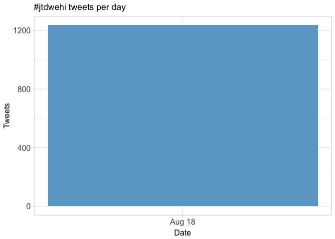
Tweets by day and time
Filtered for dates July 21-26, Prague time.

Users
Top tweeters
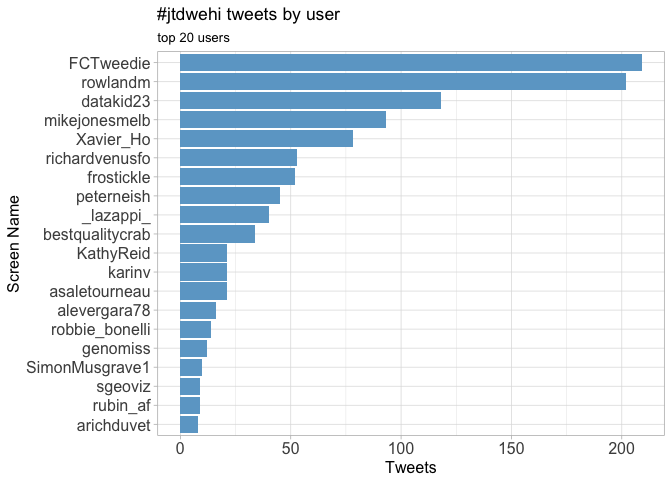
Sources
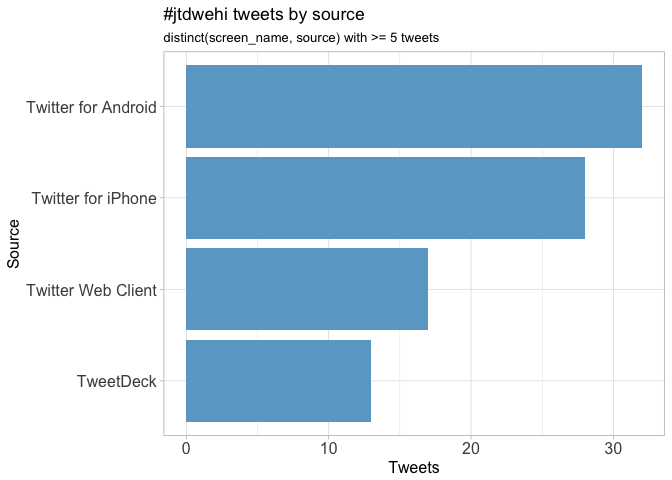
Networks
Replies
The “replies network”, composed from users who reply directly to one another, coloured by page rank.
Better to view the original PNG file in the data directory.
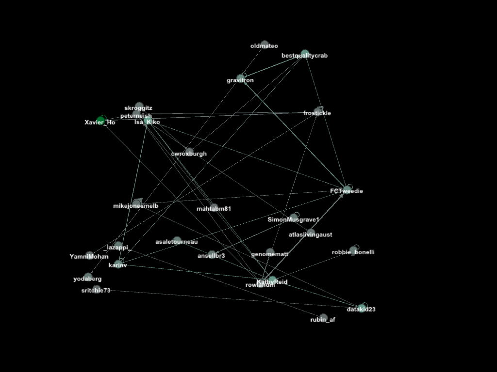
Mentions
The “mentions network”, where users mention other users in their tweets. Filtered for k-core >= 4 and coloured by modularity class.
Better to view the original PNG file in the data directory.
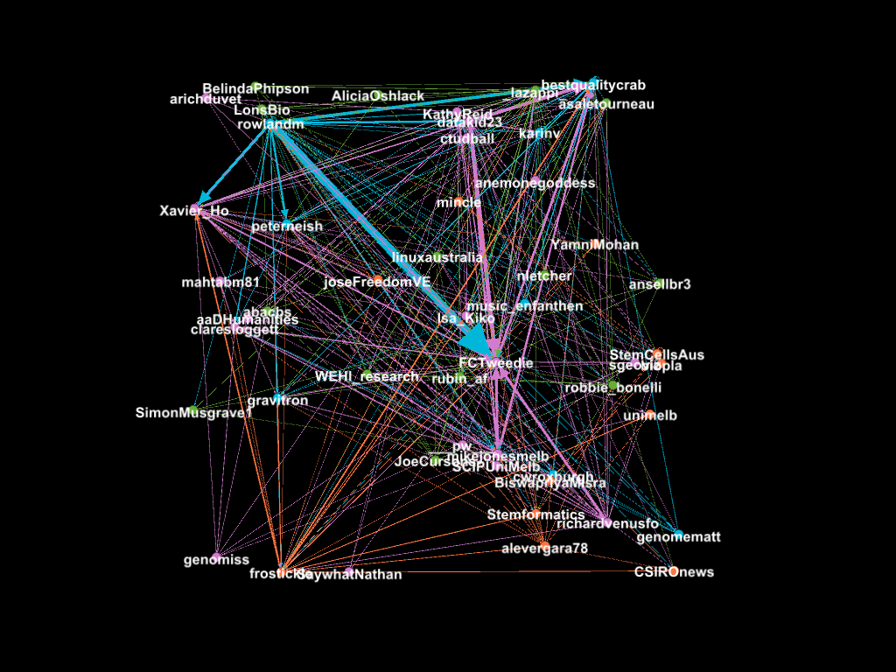
Retweets
Retweet proportion
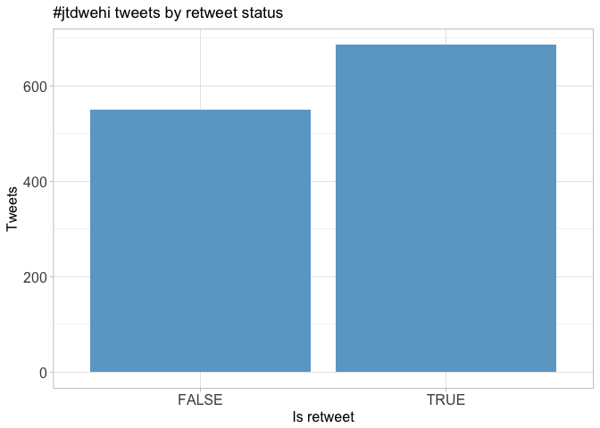
Retweet count
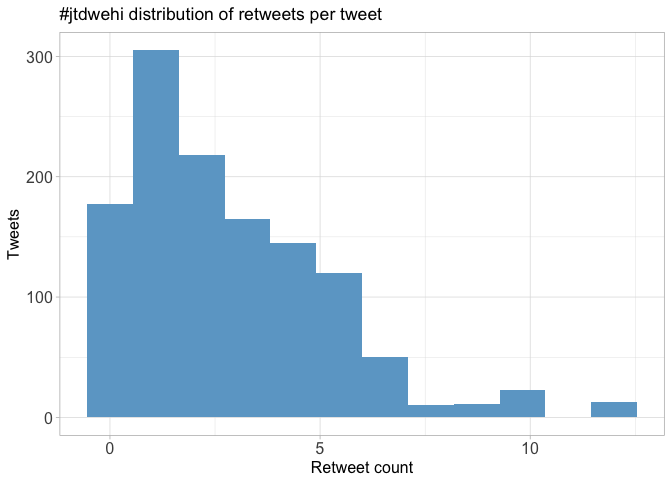
Top retweets
| screen_name | text | retweet_count |
|---|---|---|
| lazappi | Slides from my #jtdwehi talk today about building a clustering tree https://t.co/lwTztVstOC | 12 |
| lazappi | .@bestqualitycrab Visualising creative research (more creatively) #jtdwehi #sketchnotes https://t.co/DXhk1u22nf | 10 |
| FCTweedie | .@claresloggett’s tips on where to start with data viz in Python #jtdwehi https://t.co/jN626uOAqd | 10 |
| FCTweedie | Visualising grant recipients: Davids most funded but Richards get more money #jtdwehi https://t.co/iPImbK4paf | 9 |
| mikejonesmelb | Really valuable point from @KathyReid: sometimes #dataviz decisions affected by need to consider political priorities and buy-in #jtdwehi | 9 |
| gravitron | @bestqualitycrab demoing dataviz: ask the tricky Q’s not the obvious. Consider the felt not just the instrumental.… https://t.co/ca1zCn4oSO | 8 |
| mikejonesmelb | More on the Transport Network Strategic Investment Tool (TraNSIT) here https://t.co/z5v827bfjd @Xavier_Ho #jtdwehi | 8 |
| mikejonesmelb | To visualise data is to encode it; how can we decode it? So Isabelle created Tracey McTraceface https://t.co/4YoxS4T6OS #jtdwehi | 7 |
| oldmateo | :: "Research publishing methods stuck in the Stone Age" :: Brendan Ansell on balancing completeness and salience i… https://t.co/7WVV2Ni31U | 7 |
| gravitron | @bestqualitycrab leading a chorus of Slipping Away. Just your run of the mill dataviz conference. #JoiningTheDots… https://t.co/6oxUMXZfpm | 7 |
Favourites
Favourite proportion
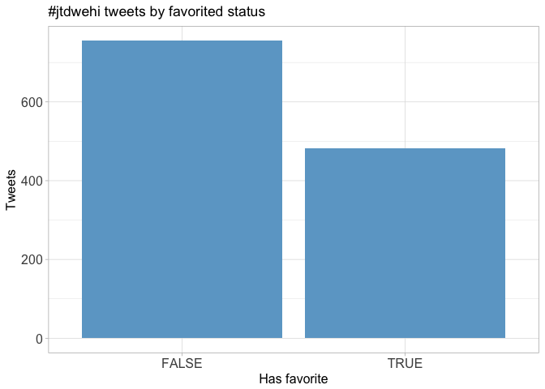
Favourite count
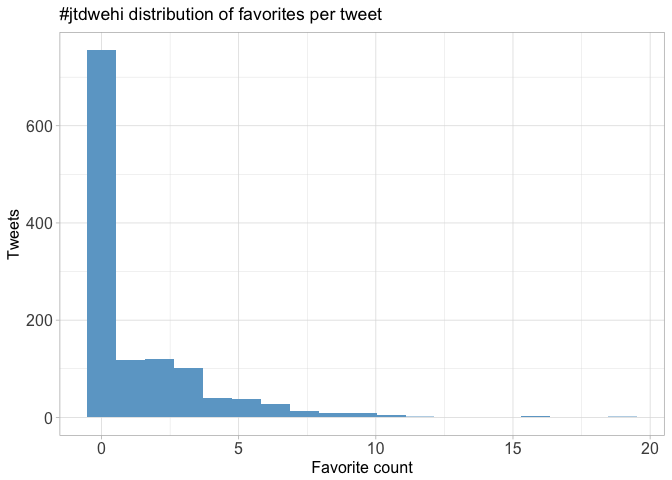
Top favourites
| screen_name | text | favorite_count |
|---|---|---|
| lazappi | Slides from my #jtdwehi talk today about building a clustering tree https://t.co/lwTztVstOC | 19 |
| Xavier_Ho | People are flowing back in #jtdwehi https://t.co/t4aU8WXoX9 | 16 |
| WEHI_research | Welcome to delegates attending today’s symposium Joining the Dots: The Art and Science of Data Visualisation! #jtdwehi #dataviz | 16 |
| FCTweedie | Visualising grant recipients: Davids most funded but Richards get more money #jtdwehi https://t.co/iPImbK4paf | 12 |
| lazappi | .@bestqualitycrab Visualising creative research (more creatively) #jtdwehi #sketchnotes https://t.co/DXhk1u22nf | 11 |
| robbie_bonelli | So inspired by the talk given by @bestqualitycrab on the problem of #genderequality and how #dataviz can help us! Thanks Deb! #jtdwehi | 11 |
| KathyReid | The incredible @bestqualitycrab keynoting #jtdwehi https://t.co/mLgKdVt4IX | 11 |
| FCTweedie | .@claresloggett’s tips on where to start with data viz in Python #jtdwehi https://t.co/jN626uOAqd | 11 |
| peterneish | Building a clustering tree https://t.co/KDgdRfBejZ #jtdwehi | 11 |
| FCTweedie | Representing Greek films via olive trees (which are are actually Markov chains) #jtdwehi https://t.co/SB2CG4oH8D | 10 |
Quotes
Quote proportion
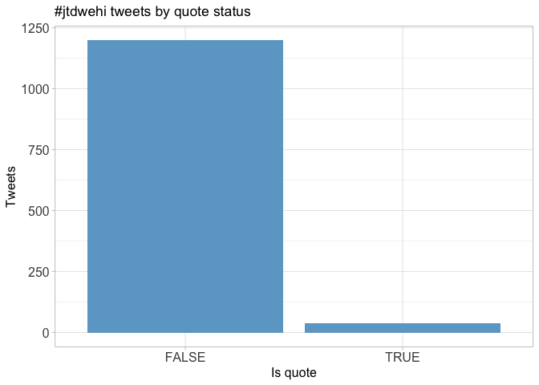
Quote count
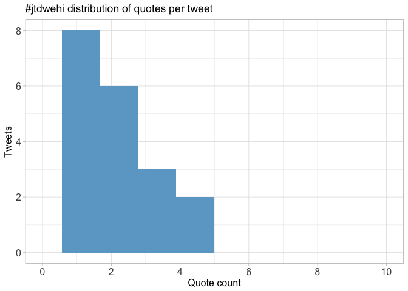
Top quotes
| screen_name | text | quote_count |
|---|---|---|
| peterneish | Would love to see some taxonomic data plotted like this. #jtdwehi https://t.co/EbBL872fum | 5 |
| Xavier_Ho | overlaying clusters: the datavis movie #jtdwehi https://t.co/KA5ovvvW6r | 5 |
| frostickle |
Where can people go from here, to take advantage of things they’ve learnt at #jtdwehi? @ResPlat? @OKFNau? #dataviz https://t.co/TM6ngns9RS |
4 |
| rowlandm | The money shot from @_lazappi_ ! #jtdwehi https://t.co/nqynLrC7Vg | 3 |
| Xavier_Ho | Slide here: https://t.co/o2E59HHoZE #jtdwehi https://t.co/L98WV1tXgu | 3 |
| karinv | Thanks to @FCTweedie and @rubin_af for a great day of #dataviz! #jtdwehi https://t.co/Hti5FQtMGz | 3 |
| rowlandm | LImited funding … sounds like research! #jtdwehi https://t.co/gZwllFhtRe | 2 |
| peterneish | Fascinating insights into the life sciences #jtdwehi https://t.co/LpRwfP00ns | 2 |
| karinv | Adding the correct hashtag! (sorry folks) #jtdwehi https://t.co/PoGZe8k1k8 | 2 |
| robbie_bonelli | Depressing and motivating! #jtdwehi https://t.co/YCGB1ibYkw | 2 |
Media
Media count
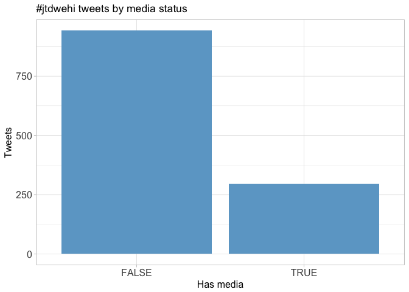
Top media
| screen_name | text | favorite_count |
|---|---|---|
| Xavier_Ho | People are flowing back in #jtdwehi https://t.co/t4aU8WXoX9 | 16 |
| FCTweedie | Visualising grant recipients: Davids most funded but Richards get more money #jtdwehi https://t.co/iPImbK4paf | 12 |
| lazappi | .@bestqualitycrab Visualising creative research (more creatively) #jtdwehi #sketchnotes https://t.co/DXhk1u22nf | 11 |
| KathyReid | The incredible @bestqualitycrab keynoting #jtdwehi https://t.co/mLgKdVt4IX | 11 |
| FCTweedie | .@claresloggett’s tips on where to start with data viz in Python #jtdwehi https://t.co/jN626uOAqd | 11 |
| FCTweedie | Representing Greek films via olive trees (which are are actually Markov chains) #jtdwehi https://t.co/SB2CG4oH8D | 10 |
| frostickle |
Now @Xavier_Ho from the @CSIROnews is talking about Visualising the Australian Transport Network #jtdwehi #dataviz https://t.co/DcvXYmD45F |
10 |
| FCTweedie | Getting underway for #jtdwehi with acknowledgement of country from @WEHI_research’s director https://t.co/oNcnu5wtd9 | 10 |
| FCTweedie | Patriarchy looks like this! What happens when we can describe the shape of injustice #jtdwehi https://t.co/8A7EhnFmt5 | 9 |
| gravitron | Best URL of the day goes to @Isa_Kiko’s https://t.co/kapY0Aeacy A great looking tool! #JoiningTheDots #jtdwehi https://t.co/gal2v1PUJY | 7 |
Most liked media image
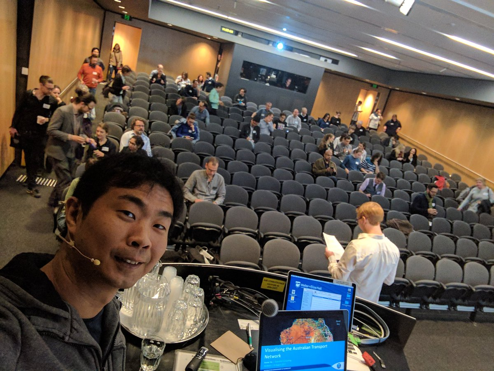
Tweet text
The 100 words used 3 or more times.
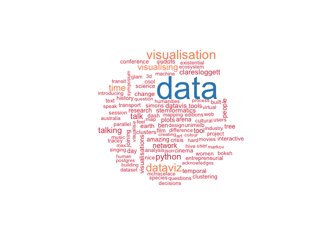